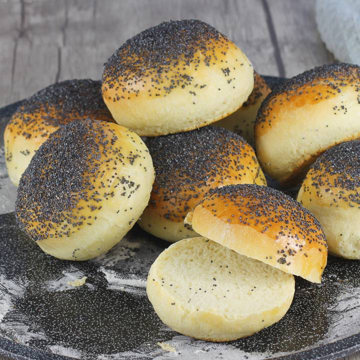

Buns

Ingredients
- 400 g wheat flour
- 200 g warm water
- 7g dry yeast
- 3 tbsp olive or oil
- 1 tbs of salt and sugar
- 1 small egg and some poppy seeds
Preparation
- Mix the dry ingredients in a bowl.
- Add the wet ingredients and mix.
- Knead the dought thoroughly and form it into a ball.
- Put the dough in a covered bowl and move to a warm place to let it grow.
- Split the dought into 8 equal parts and form each into a ball.
- Brush the buns with some whipped egg and sprinkle it with some poppy seeds.
- Bake for around 20 minutes in 190°C.
And you are finished. Enjoy!